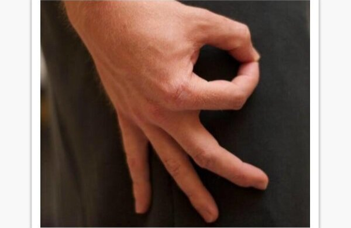

Weather forecast for Seattle
03 March 2018
Rain.
| Etiquetas | Descripcion | Ejemplo | ||||||
| <!DOCTYPE> | Sirve para definir tipo de documento HTML | |||||||
| <html> | Con esta etiqueta, el documento se definirá como documento HTML. | |||||||
| <head> | se almacenan los metadatos del documento. | |||||||
| <title> | Este comando contiene el título del documento, que además se mostrará en la barra de título del buscador. | |||||||
| <body> | es la sección principal y engloba todo el contenido que verás en el navegador. | |||||||
| <nav> | La sección de navegación de una web. | |||||||
| <Section> | Con section puedes resumir los elementos en un grupo. | EncabezadoUn montón de contenido impresionante. |
||||||
| <Article> | es la sección de contenido de una web. | Weather forecast for Seattle03 March 2018Rain. |
||||||
| <header> | define el encabezado de una web o una sección. | |||||||
| <footer> | define el pie de página de una web o una sección. | |||||||
| <h1> a <h6> | Los titulares van en las distintas tags h. Cuanto menor sea la cifra, mayor será el encabezado. | este es un encabezadoeste es un encabezadoeste es un encabezadoeste es un encabezadoeste es un encabezadoeste es un encabezado |
||||||
| <p> | indica que se trata de un párrafo. | esto es un parrafo |
||||||
| <br> | Con la tag HTML <br> se fuerza un salto de línea. | En este texto habra |
||||||
| <hr> | crea una línea divisoria física entre dos tipos de contenido. | una linea que puede dividir los parrafos |
||||||
| <b> | Poner en negrita palabras sueltas, frases o párrafos. | este texto es en negrita | ||||||
| <i> | Poner en cursiva palabras sueltas, frases o párrafos. | este texto esta en cursiva | ||||||
| <u> | El fragmento seleccionado estará subrayado. | este texto estara subrayado | ||||||
| <s> | El texto seleccionado estará tachado. | |||||||
| <sup> | Con la etiqueta <sup>, el carácter seleccionado será un superíndice, p. ej. 1o. | Este texto es superíndice |
||||||
| <sub> | Con <sub> puedes escribir caracteres en subíndices, como el 2 de H2O. | La fórmula química de agua: H2O |
||||||
| <strong> | Usa <strong> para resaltar párrafos. | Este parrafo esta resaltado | ||||||
| <em> | Con <em> puedes enfatizar fragmentos de texto. | Este parrafo esta enfatizado | ||||||
| <q> | Con <q> puedes marcar citas dentro de un texto. | en este texto |
||||||
| <blockquote> | <blockquote> marca todo un párrafo como cita. | todo este texto esta citado |
||||||
| <table> | Con la etiqueta <table> creas una tabla. | well, ya lo estan viendo XD |
||||||
| <caption> | <caption> define el título de la tabla. | el ejemplo esta arriba de la tabla |
||||||
| <tr> | Las líneas de la tabla se etiquetan con <tr>. | Esta linea completa es un ejemplo | ||||||
| <td> | <td> define una casilla de la tabla. | Esta casilla es el ejemplo | ||||||
| <th> | La celda del encabezado de una tabla se define mediante <th>. | El ejemplo esta al lado | Oh, soy yo, el ejemplo de th | |||||
|---|---|---|---|---|---|---|---|---|
| <ol> | <ol> crea una lista con números ordinales. |
|
||||||
| <ul> | <ul> crea una lista con viñetas. |
|
||||||
| <li> | <li> indica cada punto de la lista. | |
||||||
| <dl> | <dl> indica una lista de definiciones. |
|
||||||
| <dt> | <dt> define un concepto o posición en la lista de definiciones. |
|
||||||
| <dd> | <dd> indica la descripción de una definición dentro de la lista. |
|
||||||
| <img> | La tag HTML |
 | ||||||
| <map> | Con <map> puedes insertar un mapa en un documento. | |||||||
| <audio> | <audio>te permite insertar un sonido. | me crean o no, la pagina tiene un audio pero fue removido para que no choque con el video xd |
||||||
| <video> | Con <video> puedes añadir contenido en vídeo. | |||||||
| <form> | <form> inserta un formulario. | |||||||
| <input> | <input> se utiliza para controlar lo que se escribe. | |||||||
| <buttom> | Con <buttom> puedes añadir un botón. | |||||||
| <select> | <select> te permite crear una lista de opciones. | |||||||
| <a> | Con <a> se establece el hipervínculo. | You can reach Michael at: |
||||||
| <link> | <link>crea un vínculo entre el documento y una fuente externa. | |||||||
| <nav> | Con <nav> se crean los enlaces de navegación. | |||||||
| <style> | La tag de HTML <style> introduce los códigos CSS que determina el aspecto de tu web. | |||||||
| <div> | La tag HTML <div> define ciertos párrafos de un documento. | Ejemplo de div y spanEsto es un párrafo dentro de un div, y esto un span dentro de un párrafo. |
||||||
| <label> | La tag HTML <label> se utiliza junto con <input> y define un campo de texto de <input>. | |||||||
| <iframe> | Con la tag HTML <iframe> puedes incluir contenido externo en tu web. | |||||||
| <!-- … --> | <!-- … --> te permite hacer comentarios en el código HTML. | Ya lo veran en el codigo | ||||||
| <ins> | El elemento <ins> (insertado) marca las partes de un texto que han sido añadidos al documento. | Ejemplo de ins en linea:
El agua es insipida, inodora e incolora. Ejemplo de ins en bloque:El agua es insipida. Y además inodora e incolora. |
||||||
| <kbd> | Marca el texto que debe introducir el usuario. | Si está conforme escriba sí. Si no, pulse esc |
||||||
| <legend> | El elemento <legend> (leyenda) crea un título para un grupos los campos (<fieldset>) de un formulario. | |||||||
| <fieldset> | El elemento fieldset (grupo de campos) permite organizar en grupos los campos de un formulario. | |||||||
| <meta> | meta de "metainformation" - metainformación. Sirve para aportar información sobre el documento.. | |||||||
| <meter> | El elemento HTML <meter> representa un valor escalar dentro de un rango conocido o un valor fraccionario. | |||||||
| <data> | El Elemento HTML <data> vincula un contenido dado con una traducción legible por una máquina. Si el contenido está relacionado con time- o date-, debe usarse el elemento <time>. | New Products
|
||||||
| <time> | El elemento HTML <time> representa un periodo específico en el tiempo. | The Cure will be celebrating their 40th anniversary on in London's Hyde Park. |
||||||
| <template> | El elemento HTML <template> es un mecanismo para mantener el contenido HTML del lado del cliente que no se renderiza cuando se carga una página, pero que posteriormente puede ser instanciado durante el tiempo de ejecución empleando JavaScript. |
|
| |
||||
| <thead> | The <thead> HTML element defines a set of rows defining the head of the columns of the table. |
|
||||||
| <embed> | The <embed> HTML element embeds external content at the specified point in the document. | |||||||
| <figcaption> | The <figcaption> HTML element represents a caption or legend describing the rest of the contents of its parent <figure> element. | |||||||
| <figure> | The <figure> HTML element represents self-contained content, potentially with an optional caption, which is specified using the |
|||||||
| <hgroup> | The <hgroup> HTML element represents a heading and related content. It groups a single <hi>-<h6> element with one or more <p>. |
Main titleSecondary title |
||||||
| <option> | el elemento HTML <option>se usa para representar un item dentro de un <select>, un <optgroup> (en-US) o un elemento HTML5 <datalist> . | |||||||
| <small> | El elemento HTML <small> hace el tamaño del texto una talla más pequeña | The content is licensed under a Creative Commons Attribution-ShareAlike 2.5 Generic License. |
||||||
| <output> | El elemento HTML <output> es un elemento contenedor en el que un sitio o aplicación puede inyectar los resultados de un cálculo o el resultado de una acción del usuario. | |||||||
| <progress> | La etiqueta HTML <progress> se utiliza para visualizar el progreso de una tarea. | |||||||
| <rp> | El elemento HTML <rp> se utiliza para proporcionar paréntesis alternativos para los navegadores que no admiten la visualización de anotaciones Ruby utilizando el elemento <ruby>. | 漢 字 | ||||||
| <rt> | El elemento HTML <rt> especifica el componente de texto Ruby de una anotación Ruby, que se utiliza para proporcionar información de pronunciación, traducción o transliteración para la tipografía de Asia Oriental. | 漢 字 | ||||||
| <ruby> | El elemento HTML <ruby> representa pequeñas anotaciones que se representan encima, debajo o al lado del texto base, generalmente utilizadas para mostrar la pronunciación de caracteres del este de Asia. | 明日 | ||||||
| <search> | El elemento HTML <search> es un contenedor que representa las partes del documento o aplicación con controles de formulario u otro contenido relacionado con la realización de una operación de búsqueda o filtrado. | Movie website |
||||||
| <slot> | El elemento HTML <slot> —parte de la suite tecnologica Web Components — es un placeholder en un componente que tu puedes llenar con tu propio marcado, que te permite crear árboles DOM por separado y presentarlos juntos. | |||||||
| <span> | span - abarcar. Es un contenedor en línea. Sirve para aplicar estilo al texto o agrupar elementos en línea. | Ejemplo de div y spanEsto es un párrafo dentro de un div, y esto un span dentro de un párrafo. |
||||||
| <var> | Marca variables de programas y similares. | el bucle no se detendrá hasta que Faltan sea igual a 0. |
||||||
| <wbr> | El elemento HTML word break opportunity <wbr> representa una posición dentro del texto donde el explorador puede opcionalmente saltar una línea |
http://this |
||||||
| <tract> | El elemento HTML <tract> se utiliza como elemento hijo de los elementos multimedia, <audio> y <video>. | No agregare otro ejemplo, ya hay muchos videos | ||||||
| <textarea> | El elemento HTML <textarea> representa un control para la edición mutilínea de texto sin formato. | |||||||
| <summary> | El elemento HTML <summary> especifica un resumen, título o leyenda para el cuadro de divulgación de un elemento <details>. Al hacer clic en el elemento <summary> se alterna el estado del elemento principal <details> abierto y cerrado. | I have keys but no doors. I have space but no room. You can enter but can’t leave. What am I?A keyboard. |
||||||
| <script> | El elemento HTML <script> se utiliza para incrustar código o datos ejecutables; normalmente se utiliza para incrustar o hacer referencia a código JavaScript. | |||||||
| <samp> | El elemento HTML Sample (<samp>) se utiliza para incluir texto en línea que representa una muestra (o cita) de la salida de un programa de ordenador. E | I was trying to boot my computer, but I got this hilarious message:
Keyboard not found |
||||||
| <pre> | El Elemento HTML <pre> (o Texto HTML Preformateado) representa texto preformateado. |
body{
color: red;
}
a {
color:green;
}
|
||||||
| <portal> | El elemento HTML <portal> permite incrustar otra página HTML en la actual con el fin de permitir una navegación más fluida en páginas nuevas. | |||||||
| <optgroup> | El elemento HTML <optgroup> crea una agrupación de opciones dentro de un elemento <select>. | |||||||
| <noscript> | noscript de -no script . Aporta contenidos alternativos al elemento script. | |||||||
| <menu> | El elemento HTML <menu>se describe en la especificación HTML como una alternativa semántica a <ul>, pero los navegadores lo tratan (y lo exponen a través del árbol de accesibilidad) como no diferente de <ul>. | |||||||
| <mark> | El Elemento HTML Mark <mark> representa un texto marcado o resaltado como referencia o anotación, debido a su relevancia o importancia en un contexto particular. | Search results for "salamander": Several species of salamander inhabit the temperate rainforest of the Pacific Northwest. |
||||||
| <font> | font -fuente . Indica el tamaño, color, o fuente del texto que contiene. | Texto normal y ... Texto distinto. |
||||||
| <frame> | frame -marcos . Define la organización de los marcos dentro de la ventana del usuario. | |||||||
| <frameset> | frameset -conjunto de marcos . Define la organización de los marcos dentro de la ventana del usuario. | |||||||
| <dfn> | Sirve para marcar el término que se quiere definir. | El HTML es un lenguaje de marcado para hipertextos. |
||||||
| <dir> | El elemento dir (directorio) es un elemento desaprobado. En su origen fue pensado para crear directorios en multicolumna, en la actualidad es inutil. | |||||||
| <del> | El elemento del (deleted-borrado) marca las partes de un texto o documento que han sido suprimidas o sustituidas. | Ejemplo de ins en linea:
El agua es insípida El agua es insípida. y húmeda. |
||||||
| <colgroup> | colgroup de column group = Grupo de columnas. | |||||||
| <col> | Permite especificar propiedades para una columna o un grupo de ellas. | |||||||
| <cite> | cite -cita . Marca una referencia a una fuente, o el autor de un texto citado. | Galileo dijo: "... y sin embargo, se mueve." |
||||||
| <code> | Es el apropiado para marcar el código de un programa. |
#include main() { for(;;) { printf ("Hello World!\n"); } }
|
||||||
| <canvas> | El elemento HTML canvas (<canvas>) se puede utilizar para dibujar gráficos a través de secuencias de comandos (por lo general JavaScript ). | |||||||
| <big> | big de big=grande | Texto normal y... Texto más grande |
||||||
| <bdi> | El elemento HTML <bdi> (o elemento de aislamiento Bi-Direccional) aisla un trozo de texto para que pueda ser formateado con una dirección diferente al texto que hay fuera de él. | Esta palabara arábicaARABIC_PLACEHOLDER se muestra automáticamente de derecha a izquierda. |
||||||
| <base> | El elemento HTML <base> especifica la dirección URL base que se utilizará para todas las direcciones URL relativas contenidas dentro de un documento. | |||||||
| <object> | El elemento HTML <object> representa un recurso externo, que puede ser tratado como una imagen, un contexto de navegación anidado, o como un recurso que debe ser manejado por un plugin. |